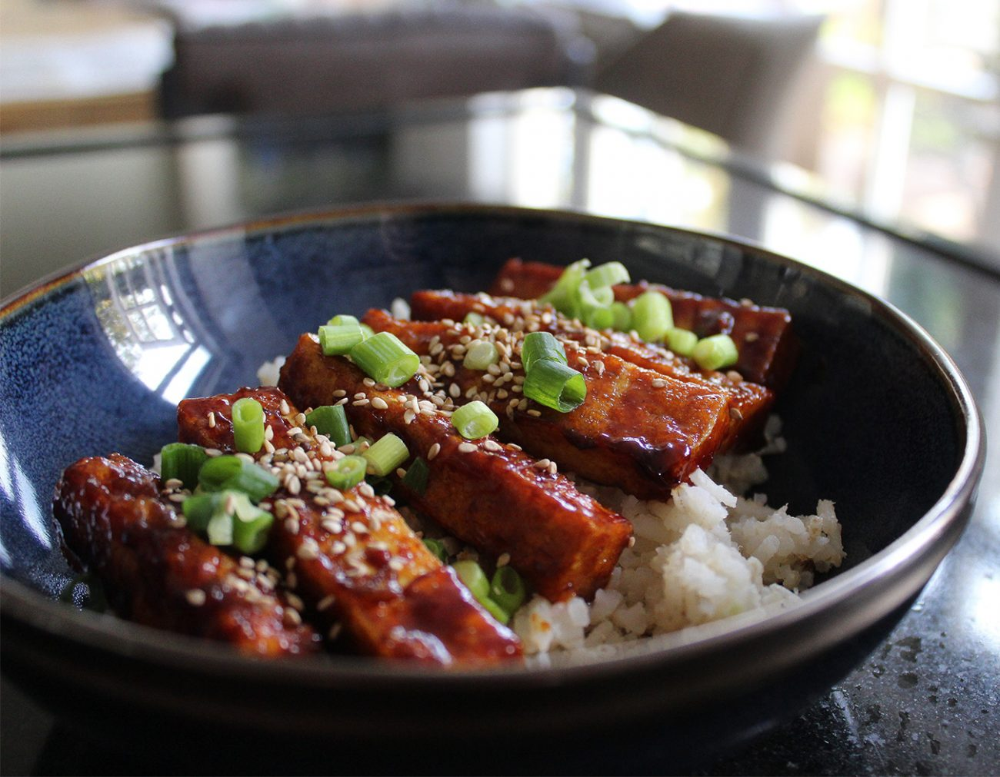

One of the finest vegan dishes you will ever have.

Ingredients
4 tbsp soy sauce
2 tbsp toasted sesame oil
2 tsp sesame seeds
2 ½cm fresh ginger
30ml lime juice
50g cornflour
80g soft brown sugar
160ml coconut water
¼ tsp salt
1 garlic clove
1 red chilli
4 spring onions
vegetable oil for frying
2 head(s) of pak choi
1 x 280g block of firm tofu
Equipment
Tofu press or 2 clean tea towels and a weight such as a heavy book
Fine grater or Microplane
Large frying pan
Line a plate with kitchen paper
Wok
Griddle pan
Instructions
Press the tofu using a tofu press or place it between two clean tea
towels, lay it on a plate and put a weight on top. Leave for at least
30 minutes to drain and firm up before you start cooking.
Meanwhile, peel the ginger by scraping off the skin with a spoon and
finely grate it. Peel and grate the garlic. Rip the stem from the
chilli, cut it in half lengthways and remove the seeds if you prefer,
then thinly slice. Finely chop two-thirds of the spring onions. Ribbon
the remaining spring onions and keep to one side to garnish. Put the
cornflour in a shallow bowl. Cut the drained tofu into 8 slices and
roll them evenly in the cornflour to coat.
Place the frying pan on a medium-high heat. Pour enough vegetable oil
into the pan to cover the base generously. Heat until a wooden spoon
dipped into the oil sizzles around the edges. Lay the tofu in the pan
and fry for 5 to 6 minutes, turning halfway Drain on kitchen paper.
Pour 1 tablespoon oil into the wok and place over a high heat. Add the
grated ginger and garlic, the chopped spring onions and the sliced
chilli. Stir-fry for 90 seconds. Sprinkle over the sugar and stir
until a syrup forms. Stir in the soy sauce and coconut water. Bring to
a rolling boil and cook for roughly 15 minutes, until the liquid has
reduced by two-thirds. Add in the lime juice. Reduce the heat to low
Heat the rice or cook it following the instructions on the packet.
Put the griddle pan on a high heat Cut the pak choi into quarters Put
it in a mixing bowl and toss with the sesame oil and salt Lay the pak
choi on the hot griddle pan, cut-side down, and cook until they get
black char lines Transfer to plates Place the slices of prepared tofu
in the wok, one by one, and toss carefully so they are well covered in
the sticky sauce Divide the rice between plates Top with the sticky
tofu Drizzle over any leftover sauce Garnish with reserved spring
onions and sesame seeds Serve with the chargrilled pak choi